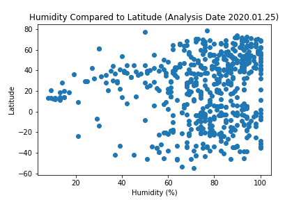
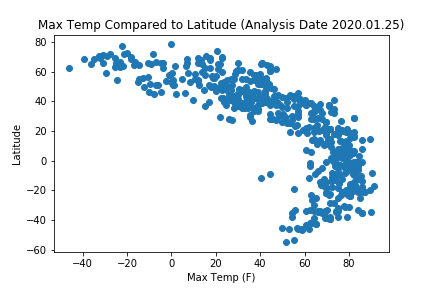

Cloudiness

The above graph is showing the percent cloudiness of the cities with their lattitude. At face value it seems like most of the cloudiness percentages are divisible by 5 or 10, and not many seem to be as diverse as say the Max Temp values which makes me curious on the metric used to measure cloudiness. And after a quick google search it appears that cloudiness is measured in Oktas, which sort of breakdown the cloudiness into quarters to see how much of the sky is covered, so it makes sense that most of the data would be divisible by 5s or 10s as it's measured with a parameter that's divisible by 5s (25% or 75%) and 10s( 50% or 100%).
Visualizations

